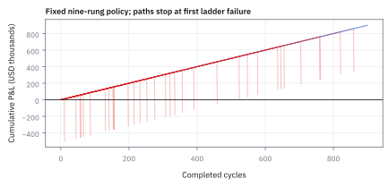
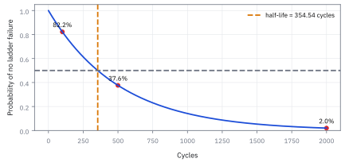

9.3 Filtrations in Continuous Time
filtration คือบัญชีว่า ณ แต่ละขณะเรารู้อะไรแล้วบ้าง และเป็นเครื่องมือที่ทั้งพิสูจน์ว่า Brownian motion ทำนายทิศไม่ได้ และจับ backtest ที่แอบดูอนาคต
ก่อนเอาเงินจริงไปเทรด ทีม quant จะลองกฎการเทรดกับข้อมูลย้อนหลังก่อน เรียกว่า backtest คือแกล้งทำเป็นย้อนเวลากลับไป ใช้กฎนั้นทุกวัน แล้วนับว่าได้หรือเสียเงินเท่าไร
ทีมหนึ่ง backtest กฎที่เทรด SPY ย้อนหลังห้าปี (SPY คือกองทุนที่ซื้อขายเหมือนหุ้นและวิ่งตามดัชนี S&P 500) กฎของทีมคือ
- ทุกวัน ตัดสินใจตอน 10:00 ว่าจะซื้อหรือขาย SPY 1 หุ้น
- ถือไว้จนตลาดปิดตอน 16:00
- ซื้อถ้าคอลัมน์ “ราคาปิด” สูงกว่าราคาตอนนี้ ขายถ้าต่ำกว่า
คอลัมน์ราคาปิดมาจากไหน ข้อมูลรายนาทีกับข้อมูลรายวันอยู่คนละตาราง ทีมเอาสองตารางมาต่อกัน (join) โดยจับคู่ด้วยวันที่ แถวของเวลา 10:00 จึงได้ราคาปิดตอน 16:00 ของวันเดียวกันติดมาด้วย
ผลออกมาดีจนน่าตกใจ ห้าปีไม่มีวันขาดทุนเลยสักวัน และ Sharpe ratio รายปีเท่ากับ 21 (Sharpe ratio คือกำไรเฉลี่ยหารด้วยความผันผวนของกำไร ยิ่งสูงยิ่งดี กลยุทธ์จริงที่ดีมากมักได้แค่ 1 ถึง 3) ผลนี้บอกว่ากลยุทธ์ดีมาก หรือบอกอย่างอื่น?
ลองตอบก่อนเปิดเฉลย
ผลนี้บอกว่าโค้ดมี “เครื่องย้อนเวลา” ตอน 10:00 ยังไม่มีใครรู้ราคาปิด แต่ตารางที่ join ผิดยื่นราคาปิดให้กฎแอบดู หน้านี้จะพิสูจน์สองเรื่อง
- กฎใดก็ตามที่ใช้ข้อมูลถึง 10:00 เท่านั้น ได้กำไรเฉลี่ย \$0 ต่อหุ้น (ในแบบจำลองราคาของหน้านี้)
- กฎที่เห็นราคาปิดได้เงินเท่าขนาดที่ราคาขยับ ทุกวัน หน้านี้จะคำนวณให้ดูทีละขั้นว่า กำไรเฉลี่ยวันละ \$4.520 ต่อหุ้น และ SD (standard deviation) ของกำไรคือ \$3.415
หาร Sharpe รายวันก่อน แล้วแปลงเป็นรายปีด้วย $\sqrt{252}$ (ปีหนึ่งมีวันทำการราว 252 วัน)
ตัวเลข 21 จึงเป็นลายนิ้วมือของข้อมูลรั่ว ไม่ใช่ฝีมือ
ภาพรวมก่อนลงสูตร
ปัญหาของ backtest ข้างบนคือมันลืมถามคำถามง่าย ๆ ข้อหนึ่ง: ตอนตัดสินใจ เรารู้อะไรแล้วบ้าง ทุก backtest และทุกสูตรตั้งราคาต้องตอบคำถามนี้ให้ได้ก่อน
คณิตศาสตร์มีชื่อเรียกบัญชี “สิ่งที่รู้แล้ว” นี้ว่า filtration และใช้สัญลักษณ์สองตัว
- $\mathcal F_t$ คือข้อมูลทั้งหมดที่มีถึงเวลา $t$
- $\mathbb E_t[\,\cdot\,]$ คือค่าเฉลี่ยที่คิดโดยรู้ข้อมูลชุดนั้นแล้ว ซึ่งก็คือคำทำนายที่ดีที่สุด ณ เวลา $t$
หน้าfiltration และ martingaleสร้างแนวคิดนี้ในเวลาที่นับเป็นขั้น เช่นวันที่ 1, 2, 3 หน้านี้ขยายไปเวลาต่อเนื่อง ที่ราคาขยับทุกขณะ จึงไม่มี “ขั้นถัดไป” ให้นับ ข้อมูลตอนเวลา $t$ คือเส้นทางราคาทั้งเส้นจนถึง $t$
เราใช้เครื่องมือสามชิ้น
- ของที่รู้แล้ว ดึงออกมานอกค่าเฉลี่ยได้เหมือนค่าคงที่
- เฉลี่ยสองชั้นได้เท่ากับเฉลี่ยชั้นเดียว
- ข้อเท็จจริงสำคัญของ standard Brownian motion $W_t$ (เขียนย่อว่า SBM คือแบบจำลองการเดินสุ่มในเวลาต่อเนื่อง): อะไรก็ตามที่คำนวณจากการขยับหลังเวลา $t$ ไม่ขึ้นกับสิ่งที่รู้ตอน $t$ เลย
ด้วยสามชิ้นนี้ หน้านี้จะทำสามเรื่อง
- พิสูจน์ว่า $W_t$, $W_t^2-t$ และ $e^{\sigma W_t-\sigma^2t/2}$ เป็น martingale ทั้งสามตัว (martingale คือของที่ค่าเฉลี่ยของอนาคตเท่ากับค่าตอนนี้ เหมือนเกมที่ยุติธรรม)
- หาราคาปิดที่ทำนายได้ดีที่สุดตอน 10:00
- คำนวณให้เห็นว่าทำไม backtest ข้างบนได้ Sharpe 21 พอดี
รูปข้างล่างสรุปทั้งหน้าในภาพเดียว ทางซ้ายของเส้นแดงคือสิ่งที่รู้แล้ว ทางขวาคืออนาคตที่ยังบานออก ส่วนเส้นเขียวคือคำทำนายที่ดีที่สุด ซึ่งแบนอยู่ที่ค่าปัจจุบัน
รูป — ข้อมูลหยุดที่ “ตอนนี้” อนาคตบานออก แต่คำทำนายแบนราบ
ศัพท์ที่ใช้ในหัวข้อนี้
- Backtest
- การลองกฎการเทรดกับข้อมูลย้อนหลัง เหมือนย้อนเวลากลับไปเทรดทุกวัน แล้วนับกำไรขาดทุน ใช้ได้ก็ต่อเมื่อแต่ละวันกฎเห็นเฉพาะข้อมูลที่มีอยู่จริงในตอนนั้น
- Position
- จำนวนหุ้นที่ถืออยู่ ใช้สัญลักษณ์ $h$ เช่น $h=+1$ คือซื้อ 1 หุ้น $h=-1$ คือขาย 1 หุ้นโดยยืมหุ้นมาขายก่อน (short) แล้วซื้อคืนทีหลัง ฝั่งนี้ได้กำไรเมื่อราคาลง
- P&L
- ย่อจาก profit and loss คือกำไรหรือขาดทุนเป็นดอลลาร์ ถือ $h$ หุ้นขณะราคาขยับจาก $S_a$ ไป $S_b$ ได้ P&L เท่ากับ $h(S_b-S_a)$
- Filtration $\mathcal F_t$
- ข้อมูลทั้งหมดที่มีจนถึงเวลา $t$ ข้อมูลนี้โตตามเวลาที่เดินไป และไม่เคยหาย ใช้กำหนดว่าสูตร สัญญาณ หรือ position มีสิทธิ์เห็นอะไรบ้าง ณ แต่ละขณะ
- รู้ได้ตอนเวลา $t$ (adapted)
- ค่าที่คำนวณได้จากราคาที่เห็นแล้วจนถึงเวลา $t$ เช่นราคาสูงสุดตั้งแต่เปิดตลาดถึงตอนนี้ ใช้เป็นเกณฑ์ตรวจว่า feature (ตัวแปรที่ป้อนให้กฎการเทรด) ตัวไหนใช้ได้
- $\mathbb E_t[X]$
- ย่อมาจาก $\mathbb E[X\mid\mathcal F_t]$ อ่านว่า ค่าเฉลี่ยของ $X$ เมื่อรู้เส้นทางจนถึงเวลา $t$ แล้ว มันคือคำทำนายที่ดีที่สุดตอนนั้น ตัวมันเองรู้ได้ตอน $t$ แต่ถ้ามองจากเวลาก่อนหน้า มันยังเป็นค่าสุ่ม
- SBM $W_t$
- standard Brownian motion คือการเดินสุ่มในเวลาต่อเนื่องที่เริ่มที่ 0 การขยับในช่วงเวลายาว $s$ มีค่าเฉลี่ย 0 และ variance $s$ และการขยับในช่วงที่ไม่ทับกันไม่ขึ้นต่อกัน (standard Brownian motion)
- Martingale
- ค่าที่เปลี่ยนตามเวลาและมีสามข้อ: รู้ได้ตอนเวลา $t$, ค่าเฉลี่ยของขนาด $\mathbb E|X_t|$ ไม่เป็นอนันต์ และค่าเฉลี่ยของอนาคตเท่ากับค่าตอนนี้ คือแบบจำลองของเกมที่ยุติธรรม ต้องบอกเสมอว่าเทียบกับข้อมูลชุดไหน ถ้าค่าเฉลี่ยของอนาคตไม่ต่ำกว่าค่าตอนนี้ เรียกว่า submartingale ถ้าไม่สูงกว่า เรียกว่า supermartingale
- Tower property
- กฎ $\mathbb E_{s}\big[\mathbb E_t[X]\big]=\mathbb E_s[X]$ เมื่อ $s\le t$ (law of iterated expectations) แปลว่าเฉลี่ยสองชั้นได้เท่ากับเฉลี่ยชั้นเดียว หน้านี้ใช้มันพิสูจน์ว่ากฎที่ซื่อสัตย์ได้กำไรเฉลี่ยศูนย์
- Look-ahead bias
- ความผิดที่ backtest ใช้ข้อมูลที่ยังมาไม่ถึง ณ เวลาตัดสินใจ ผลจึงดีเกินจริง เพราะข้อมูลอนาคตรั่วเข้ามา ไม่ใช่เพราะสัญญาณดี
- Sharpe ratio
- กำไรเฉลี่ยหารด้วย SD ของกำไร ถ้าคิดรายวันแล้วอยากได้รายปี ให้คูณ $\sqrt{252}$ เพราะในหนึ่งปีมีวันทำการราว 252 วัน กำไรเฉลี่ยรวมโต 252 เท่า แต่ SD โตแค่ $\sqrt{252}$ เท่า (variance ของวันที่ไม่ขึ้นต่อกันบวกกันได้) กลยุทธ์จริงที่ดีมากมักอยู่ราว 1 ถึง 3 ตัวเลขระดับ 20 จึงเป็นสัญญาณเตือน (การอนุมาน Sharpe ratio)
สัญลักษณ์และหน่วย
| สัญลักษณ์ | ความหมาย | หน่วย |
|---|---|---|
| $S_u$ | ราคา SPY ที่เวลา $u$ ตัวห้อยเป็นเวลานาฬิกา เช่น $S_{10}$ คือ 10:00 | ดอลลาร์ |
| $W_t$ | SBM ที่เวลา $t$ | รากของปี |
| $t,\ s$ | $t$ คือเวลาตอนนี้ $s$ คือระยะเวลาที่มองไปข้างหน้า | ปี |
| $\sigma$ | ความผันผวนต่อปี ในขั้นที่ใช้ $e^{\sigma W_t}$ คือ 0.18 ส่วนในแบบจำลองดอลลาร์ของ SPY คือ $0.18\times520=93.60$ | ต่อรากของปี, ดอลลาร์ต่อรากของปี |
| $\mathcal F_t,\ \mathbb E_t,\ \operatorname{Var}_t$ | ข้อมูลถึงเวลา $t$ และค่าเฉลี่ยกับ variance เมื่อรู้ข้อมูลนั้น | ตามสิ่งที่อยู่ข้างใน |
| $h$ | position ที่เลือกตอนตัดสินใจ เช่น +1 ซื้อ −1 ขาย | หุ้น |
| $\Delta$ | การขยับหลังเวลา $t$ คือ $W_{t+s}-W_t$ | รากของปี |
| $M_t,\ Z_t$ | $W_t^2-t$ และ $e^{\sigma W_t-\sigma^2t/2}$ สอง martingale ที่สร้างจาก $W$ | ปี, ไม่มีหน่วย |
ขั้นที่ 1 — ข้อมูลที่มีตอนเวลาหนึ่ง: ต้นไม้สองขั้นของ SPY
ก่อนไปเวลาต่อเนื่อง เริ่มจากโลกเล็ก ๆ ที่นับด้วยมือได้ สมมติว่าในวันหนึ่ง ราคา SPY ขยับแค่สองครั้ง แล้วดูว่าที่แต่ละเวลา เรารู้อะไรบ้าง
โจทย์ให้อะไรมาบ้าง:
- ตอน 10:00 ราคา SPY คือ $S_{10}=\$520$ (ตัวห้อยคือเวลานาฬิกา)
- จาก 10:00 ถึง 13:00 ราคาขึ้น \$4 หรือลง \$4 โอกาสอย่างละครึ่ง
- จาก 13:00 ถึง 16:00 ซึ่งตลาดปิด ราคาขึ้นหรือลงอีก \$4 โอกาสอย่างละครึ่ง และไม่ขึ้นกับก้าวแรก
ขนาด \$4 ไม่ได้เลือกลอย ๆ มันใกล้กับ SD ของการขยับสามชั่วโมงของ SPY จริง ถ้าให้ความผันผวนต่อปีเป็น 18% (ค่าสมมติ ใกล้ระดับปกติของ SPY) คิดได้ดังนี้
$\sigma$ คือความผันผวนต่อปีคิดเป็นดอลลาร์ หน่วยคือดอลลาร์ต่อรากของปี สามชั่วโมงคือ 180 นาที ส่วน 98,280 คือจำนวนนาทีซื้อขายในหนึ่งปี: 252 วันทำการ วันละ 390 นาที (ตลาดเปิด 9:30 ถึง 16:00 คือ 6.5 ชั่วโมง) เราคูณ $\sigma$ ด้วยรากของเวลา ไม่ใช่เวลาตรง ๆ เพราะ variance ของการขยับโตตามเวลา SD จึงโตตามรากของเวลา ตามหน้าstandard Brownian motion
สองก้าว ก้าวละสองทาง จึงมีสี่เส้นทาง เขียนราคาเรียง 10:00 → 13:00 → 16:00
คำตอบ: ข้อมูลที่มีขึ้นกับว่ายืนอยู่เวลาไหน
- ตอน 10:00 รู้แค่ราคา \$520 ทั้งสี่เส้นทางยังเป็นไปได้
- ตอน 13:00 รู้แล้วว่าก้าวแรกขึ้นหรือลง เหลือสองเส้นทาง
- ตอน 16:00 รู้ทั้งสองก้าว เหลือเส้นทางเดียว
ค่าที่ “รู้ได้ตอนเวลา $t$” คือค่าที่คำนวณได้จากราคาที่เห็นแล้วถึง $t$ เช่น $S_{13}$ รู้ได้ตอน 13:00 แต่ตอน 10:00 ยังไม่รู้ และข้อมูลโตได้อย่างเดียว ไม่มีอะไรที่รู้ตอน 13:00 แล้วลืมไปตอน 16:00
ตรวจเองใน 10 วินาที: สองก้าวไม่ขึ้นต่อกัน แต่ละเส้นทางจึงมีโอกาส $\tfrac12\times\tfrac12=\tfrac14$ ราคาปิด 520 เกิดได้สองเส้นทาง คือขึ้นแล้วลง กับลงแล้วขึ้น จึงมีโอกาส $\tfrac14+\tfrac14=\tfrac12$ ราคาปิดที่เป็นไปได้คือ 528, 520, 512 ด้วยโอกาส $\tfrac14$, $\tfrac12$, $\tfrac14$
รูป — ต้นไม้ราคาสองขั้น และคำทำนายที่แต่ละจุด
ขั้นที่ 2 — ค่าเฉลี่ยตามข้อมูลที่มี และค่าเฉลี่ยสองชั้น
ตอนนี้เรารู้แล้วว่าแต่ละเวลารู้อะไร คำถามต่อไปคือ ถ้าต้องเดาราคาปิด ควรเดาเท่าไร คำตอบขึ้นกับว่าถามตอนไหน
- ตอน 13:00 เรารู้ก้าวแรกแล้ว จึงเฉลี่ยเฉพาะสองเส้นทางที่ยังเป็นไปได้ เขียนว่า $\mathbb E_{13}[S_{16}]$
- ตอน 10:00 ยังไม่รู้อะไร ต้องเฉลี่ยทั้งสี่เส้นทาง เขียนว่า $\mathbb E_{10}[S_{16}]$
กิ่ง “up” คือก้าวแรกขึ้นไป 524 กิ่ง “down” คือก้าวแรกลงไป 516 แถวสุดท้ายลองเฉลี่ยสองชั้น คือเอาคำทำนายตอน 13:00 มาเฉลี่ยอีกที
คำทำนายที่ดีที่สุดตอน 13:00 คือราคาตอน 13:00 เอง (524 หรือ 516) เพราะก้าวที่เหลือขึ้น \$4 หรือลง \$4 เท่า ๆ กัน มีค่าเฉลี่ยศูนย์ จุดที่คนมักสะดุดคือ $\mathbb E_{13}[S_{16}]$ เป็นตัวเลขที่รู้แน่ตอน 13:00 แต่ถ้ายืนอยู่ที่ 10:00 มันยังเป็นค่าสุ่ม อาจเป็น 524 หรือ 516 ครึ่งต่อครึ่ง
พอเอาค่าสุ่มนี้มาเฉลี่ยจากมุมของ 10:00 ได้ 520 เท่ากับคำทำนายตอน 10:00 พอดี กฎนี้ชื่อ tower property: เฉลี่ยทีละชั้นกับเฉลี่ยรวดเดียวได้เท่ากันเสมอ ไม่ใช่เรื่องบังเอิญ เพราะทั้งสองวิธีบวกสี่เส้นทางเดิมด้วยน้ำหนักเดิม $\tfrac14$ แค่จัดกลุ่มต่างกัน
ขั้นที่ 3 — ของที่รู้แล้วดึงออกได้: ทำไมกฎที่ซื่อสัตย์ได้ศูนย์
ทีนี้ถามเรื่องเงิน สมมติว่ากลยุทธ์เลือก position $h$ ตอน 13:00 แล้วถือถึง 16:00 โดย $h=+1$ คือซื้อ 1 หุ้น และ $h=-1$ คือขาย 1 หุ้น กำไรขาดทุนเป็นดอลลาร์ (P&L) คือ $h(S_{16}-S_{13})$
ตัวอย่างแรกคือกฎ momentum ซึ่งตามทิศเดิม: ถ้าก้าวแรกขึ้นให้ซื้อ ถ้าก้าวแรกลงให้ขาย นับกำไรทีละเส้นทาง
- ขึ้นแล้วขึ้น: $(+1)(+4)=+4$
- ขึ้นแล้วลง: $(+1)(-4)=-4$
- ลงแล้วขึ้น: $(-1)(+4)=-4$
- ลงแล้วลง: $(-1)(-4)=+4$
เฉลี่ยได้ $\tfrac14(4-4-4+4)=0$ บังเอิญหรือเปล่า? สูตรข้างล่างตอบว่าไม่บังเอิญ ทุกกฎได้ศูนย์ ขอแค่ $h$ คิดจากสิ่งที่รู้ตอน 13:00 เพราะตอน 13:00 ค่า $h$ เป็นตัวเลขที่รู้แล้ว จึงดึงออกมานอกค่าเฉลี่ยได้เหมือนค่าคงที่ สองแถวท้ายเทียบกับกฎที่รั่ว $h_{\text{leak}}$ ซึ่งแอบดูราคา 16:00 แล้วเลือกทิศตาม $\operatorname{sign}$ ของการขยับ ($\operatorname{sign}(x)$ เป็น $+1$ เมื่อ $x\gt0$ และ $-1$ เมื่อ $x\lt0$)
หัวใจของขั้นนี้คือการดึง $h$ ออกมา มันทำได้เพราะตอน 13:00 เรารู้ $h$ แล้ว มันจึงเป็นแค่ตัวคูณคงที่ ที่เหลือข้างในคือก้าวที่ยังไม่เกิด ซึ่งเฉลี่ยศูนย์ ผลคูณจึงเป็นศูนย์ ไม่ว่า $h$ จะคิดจากสูตรฉลาดแค่ไหน พอย้อนกลับไปมองจาก 10:00 ด้วย tower property ก็ได้ศูนย์เหมือนกัน นี่คือเหตุผลเดียวกับที่ระบบเดิมพันแบบ martingale ซึ่งเพิ่มเงินเดิมพันเป็นสองเท่าทุกครั้งที่แพ้ เอาชนะเกมที่ยุติธรรมไม่ได้
กฎที่รั่วพังตรงจุดนี้พอดี $h_{\text{leak}}$ ใช้ราคา 16:00 จึงไม่ใช่ตัวเลขที่รู้ตอน 13:00 และดึงออกมานอกค่าเฉลี่ยไม่ได้ มันเลือกทิศถูกทุกครั้ง ผลคูณจึงกลายเป็นขนาดการขยับ $|S_{16}-S_{13}|$ ได้ +4 ทุกเส้นทาง ไม่มีเส้นทางไหนขาดทุน
ขั้นที่ 4 — ข้อมูลในเวลาต่อเนื่อง: ทั้งเส้นทางจนถึงตอนนี้
ต้นไม้มีแค่สองก้าว แต่ราคาจริงขยับทุกขณะ ไม่มีกิ่งให้นับ เราจึงต้องเขียนเรื่องเดิมใหม่ให้ใช้กับเวลาต่อเนื่องได้ ข้อมูลตอนเวลา $t$ คือเส้นทางราคาทั้งเส้น ตั้งแต่ตลาดเปิด 9:30 จนถึง $t$ สามแถวแรกข้างล่างเขียนข้อมูลนี้ด้วยช่วงเวลาแทนการนับกิ่ง
แถวที่สี่นิยาม $\mathbb E_t$ ด้วย $W$ แทน $S$ ทำได้เพราะในแบบจำลองของหน้านี้ ราคาคือ $W$ ที่ถูกยืดและเลื่อน (เช่น $S_{16}-S_{10}=93.60\,(W_{16}-W_{10})$ ในขั้นที่ 8) รู้เส้นหนึ่งก็รู้อีกเส้น แถวสุดท้ายคือข้อเท็จจริงที่ทำให้ Brownian motion คำนวณง่าย โดย $g$ คือฟังก์ชันอะไรก็ได้ เช่น $g(x)=x$, $g(x)=x^2$ หรือ $g(x)=e^{\sigma x}$
ข้อมูลซ้อนกันเป็นชั้น ทุกอย่างที่รู้ตอน 9:45 ยังรู้ตอน 10:00 และทุกอย่างที่รู้ตอน 10:00 ยังรู้ตอน 16:00 ชุดข้อมูลที่โตตามเวลาโดยไม่ลืมอะไรนี่แหละคือ filtration ไม่มีอะไรมากกว่านั้น ส่วน $\mathbb E_t[X]$ คือค่าเฉลี่ยของ $X$ บนทุกเส้นทางที่ตรงกับสิ่งที่เห็นแล้วจนถึง $t$ เหมือนตอนต้นไม้ที่เราเฉลี่ยเฉพาะกิ่งที่ยังเป็นไปได้
ข้อเท็จจริงสำคัญมาจากกติกาของ Brownian motion: การขยับหลังเวลา $t$ ไม่ขึ้นกับเส้นทางก่อนหน้าเลย ถ้าตัวการขยับไม่ขึ้นกับอดีต อะไรที่คำนวณจากมันอย่างเดียว เช่น $g(W_{t+s}-W_t)$ ก็ไม่ขึ้นกับอดีตด้วย การรู้อดีตจึงไม่เปลี่ยนค่าเฉลี่ยของมัน และการขยับ $W_{t+s}-W_t$ ยังเป็น $\mathcal N(0,s)$ (Normal ค่าเฉลี่ย 0 variance $s$) แม้จะเห็นอดีตแล้ว ทุกขั้นต่อจากนี้ใช้แถวนี้ แค่เปลี่ยน $g$ ไปทีละตัว
ขั้นที่ 5 — การทำนายที่ดีที่สุดของ Brownian motion คือค่าปัจจุบัน
ในต้นไม้ คำทำนายที่ดีที่สุดคือราคาตอนนี้ ในเวลาต่อเนื่องเป็นอย่างนั้นไหม? ใช้ทริกเดียวกับต้นไม้: แยกค่าในอนาคตเป็นสองก้อน คือส่วนที่รู้แล้ว บวกส่วนที่ยังไม่เกิด แล้วจัดการแต่ละก้อนด้วยเหตุผลคนละแบบ ท้ายสุดต้องตรวจอีกข้อหนึ่งของ martingale คือขนาดเฉลี่ย $\mathbb E|W_t|$ ต้องไม่เป็นอนันต์ โดยเขียน $W_t=\sqrt t\,Z$ เมื่อ $Z$ คือ Normal มาตรฐาน (ค่าเฉลี่ย 0 variance 1)
การแยกก้อนเป็นจริงทุกเส้นทาง เพราะแค่บวกแล้วลบ $W_t$ ตัวเดียวกัน จังหวะสำคัญคือตอนที่สองก้อนถูกจัดการด้วยเหตุผลคนละแบบ ก้อนแรก $W_t$ รู้แล้วตอน $t$ ค่าเฉลี่ยของมันจึงเป็นตัวมันเอง ก้อนที่สองคือการขยับที่ยังไม่เกิด เราใช้ข้อเท็จจริงสำคัญกับ $g(x)=x$ ค่าเฉลี่ยเมื่อรู้อดีตจึงเท่ากับค่าเฉลี่ยตอนไม่รู้อะไรเลย ซึ่งเป็นศูนย์
martingale ต้องผ่านสองเงื่อนไข ค่าเฉลี่ยของอนาคตต้องเท่ากับค่าตอนนี้ ซึ่งเพิ่งได้ และขนาดเฉลี่ยต้องไม่เป็นอนันต์ ซึ่งได้จาก $\mathbb E|Z|=\sqrt{2/\pi}$ ในหน้า standard Brownian motion SBM ผ่านทั้งสองข้อ แปลว่าคำทำนายที่ดีที่สุดของอนาคตคือค่าตอนนี้ ไม่ใช่ค่าที่หวัง ไม่ใช่ค่าเฉลี่ยของสัปดาห์ก่อน และไม่มีรูปแบบในอดีตแบบไหนช่วยได้ นี่คือเส้นเขียวแบนในรูปภาพรวม
ขั้นที่ 6 — กำลังสองทำนายได้: เอียงขึ้นเท่าเวลา หักเวลาออกแล้วแบน
$W$ ทำนายไม่ได้ แล้ว $W^2$ ล่ะ? คำถามนี้สำคัญ เพราะกำลังสองของการขยับคือสิ่งที่วัดความผันผวน ลองแยกแบบเดิมแล้วกระจายกำลังสอง ให้ $\Delta:=W_{t+s}-W_t$ คือการขยับที่ยังไม่เกิด มันมีค่าเฉลี่ย 0 และ variance $s$ ไม่ว่าจะเห็นอดีตแบบไหน
แถวที่สี่ใช้สูตร variance ปกติ $\operatorname{Var}(X)=\mathbb E[X^2]-(\mathbb E[X])^2$ โดยแทน $\mathbb E_t[W_{t+s}]=W_t$ จากขั้นก่อน สองแถวท้ายลองหักเวลาออกจาก $W^2$ แล้วตั้งชื่อว่า $M_t$
พจน์ไขว้ $2W_t\Delta$ หายไปด้วยเหตุผลเดียวกับกฎที่ซื่อสัตย์: $W_t$ รู้แล้ว ดึงออกมาคูณกับ $\mathbb E_t[\Delta]=0$ แต่พจน์ $\Delta^2$ ไม่หาย เพราะกำลังสองเป็นบวกเสมอ ราคาขึ้นหรือลงก็ได้ค่าบวก และเมื่อ $\Delta$ เฉลี่ยศูนย์ ค่าเฉลี่ยของ $\Delta^2$ ก็คือ variance ของมันพอดี คือ $s$ ดังนั้น $W^2$ ทำนายได้บางส่วน ค่าเฉลี่ยของอนาคตสูงกว่าค่าตอนนี้อยู่ $s$ เสมอ ของแบบนี้เรียกว่า submartingale
มันเอียงขึ้นหนึ่งหน่วยต่อหนึ่งหน่วยเวลาพอดี ถ้าหักเวลาออก ส่วนที่เอียงก็หายไป เวลา $t+s$ เป็นตัวเลขที่รู้แน่ จึงผ่านค่าเฉลี่ยออกมาตรง ๆ แล้ว $s$ สองตัวหักกันพอดี ได้ $M_t=W_t^2-t$ เป็น martingale ตัวที่สอง
ตรวจกับต้นไม้ได้ ก้าวละ \$4 มี variance $4^2=16$ ทุกก้าวจึงทำให้ $(S-520)^2$ โตเฉลี่ย 16 ตัวที่หักแล้วคือ $(S-520)^2-16k$ เมื่อ $k$ คือจำนวนก้าวที่เดินไป ตอนเริ่ม $k=0$ ได้ $0$ ตอน 16:00 $k=2$ ได้สี่เส้นทางเป็น $64-32$, $0-32$, $0-32$, $64-32$ เฉลี่ย $\tfrac14(32-32-32+32)=0$ เท่าค่าเริ่ม การหักส่วนที่ทำนายได้ออกแบบนี้คือทริกเดียวกับmartingale จาก random walk ที่หัก $n\mu$ ออกจากผลรวม
รูป — ค่าเฉลี่ยของ W² เกาะเส้น t แต่ W² − t เกาะศูนย์

ขั้นที่ 7 — ฟังก์ชันเลขชี้กำลังของการขยับ: martingale ตัวที่สาม
ราคาหุ้นไม่ได้ขยับแบบบวกเพิ่มทีละดอลลาร์ แต่โตแบบคูณเป็นเปอร์เซ็นต์ แบบจำลองราคาหุ้นที่ใช้กันมาก คือ geometric Brownian motion (GBM) จึงมี $e^{\sigma W_t}$ อยู่ข้างใน เราจึงต้องรู้ว่า $e^{\sigma W}$ ทำนายได้ไหม
ข้อเท็จจริงสำคัญใช้กับ $g$ อะไรก็ได้ ลอง $g(x)=e^{\sigma x}$ โดย $\sigma$ คือความผันผวนต่อปี คำถามแรกคือ ถ้า $\Delta$ เฉลี่ยศูนย์ แล้วค่าเฉลี่ยของ $e^{\sigma\Delta}$ เป็น 1 ไหม เครื่องมือคือ moment generating function ของ Normal: $\mathbb E[e^{aX}]=e^{a^2v/2}$ เมื่อ $X$ เป็น Normal ค่าเฉลี่ย 0 variance $v$ ในที่นี้ $a=\sigma$ และ $v=s$
คำตอบแรกน่าแปลกใจ ค่าเฉลี่ยของ $e^{\sigma\Delta}$ ไม่ใช่ 1 แม้ $\Delta$ จะเฉลี่ยศูนย์ เพราะ $e^x$ โค้งขึ้น ขาขึ้นได้มากกว่าที่ขาลงเสีย เช่น $e^{0.1}\approx1.105$ ได้เพิ่ม 0.105 แต่ $e^{-0.1}\approx0.905$ เสียแค่ 0.095 ค่าเฉลี่ยจึงเกิน 1 ไปเป็น $e^{\sigma^2s/2}$ ที่ความผันผวน 18% ต่อปี เกินไป $1.01633-1\approx1.63\%$ ต่อปี ตัวเลขนี้คือที่มาของพจน์ $-\sigma^2/2$ ใน GBM และเป็นเหตุผลที่ราคาที่คาดหวังของ GBMโตด้วยอัตรา $\mu$ ไม่ใช่ $\mu-\sigma^2/2$
เพื่อแก้ส่วนเกินนี้ เราหาร $e^{\sigma W_t}$ ด้วย $e^{\sigma^2t/2}$ ได้ $Z_t$ จากนั้นแยก $Z_{t+s}$ เป็น $Z_t$ ที่รู้แล้ว คูณส่วนที่ยังไม่เกิด ดึง $Z_t$ ออกมานอกค่าเฉลี่ย แล้วใช้ผลแรก ตัวคูณ $e^{-\sigma^2s/2}$ กับ $e^{\sigma^2s/2}$ หักกันพอดี $Z$ จึงเป็น martingale ตัวที่สาม ($Z_t$ เป็นบวกเสมอ ขนาดเฉลี่ยจึงเท่ากับ $\mathbb E[Z_t]=Z_0=1$ ไม่เป็นอนันต์) นี่คือการหักส่วนที่โค้งขึ้นออก แบบเดียวกับที่หัก $t$ ออกจาก $W^2$
โค้ดท้ายหน้าสุ่ม $\Delta$ จาก Normal ค่าเฉลี่ย 0 variance 1 มา 200,000 ครั้ง ได้ค่าเฉลี่ยของ $e^{0.18\Delta}$ เป็น 1.0167 เทียบกับ 1.0163 จากสูตร และค่าเฉลี่ยของตัวที่หักแล้ว $e^{0.18\Delta-0.0162}$ เป็น 1.0003 ใกล้ 1 ตามที่ martingale ควรเป็น
ขั้นที่ 8 — ราคาปิดที่ทำนายได้ตอน 10:00
กลับมาที่คำถามของทีมในตอนเปิดเรื่อง ตอน 10:00 คนที่ซื่อสัตย์ทำนายราคาปิดได้ดีแค่ไหน ตอนนี้เรามีเครื่องมือครบแล้ว
โจทย์ให้อะไรมาบ้าง:
- ราคาตอน 10:00 คือ $S_{10}=\$520$
- ความผันผวนต่อปี 18% (ค่าสมมติเดิม) คิดเป็นดอลลาร์ได้ $\sigma=0.18\times520=93.60$ ดอลลาร์ต่อรากของปี
- แบบจำลองดอลลาร์: ราคาขยับเท่ากับ $\sigma$ คูณการขยับของ SBM
- 10:00 ถึง 16:00 คือ 360 นาที เทียบกับนาทีซื้อขายทั้งปี $252\times390=98{,}280$ นาที
ตัด drift ออกก่อน (drift คืออัตราที่ราคาโตเฉลี่ยต่อปี) เพราะมันเล็กมากในหกชั่วโมง ถ้าสมมติ drift 8% ต่อปี ราคาจะขยับเฉลี่ยเพียง $520\times0.08\times\tfrac{360}{98{,}280}\approx\$0.15$
ข้างล่างแปลงเวลาเป็นปี แล้วคูณ $\sigma$ ด้วยรากของเวลาเหมือนในขั้นที่ 1 $\operatorname{SD}_{10}$ คือ SD ของราคาปิดเมื่อมองจาก 10:00
คำตอบ: ราคาปิดที่ทำนายได้ดีที่สุดตอน 10:00 คือ \$520 เท่าราคาตอนนั้น เพราะ $W$ เป็น martingale ตามขั้นที่ 5 แต่คำทำนายนี้คลาดได้ หนึ่ง SD คือราว \$5.665 ส่วนค่าเฉลี่ยของกำลังสองของการขยับคือ $5.665^2\approx32.09$ ตัวเลขนี้รู้ได้ล่วงหน้าตั้งแต่ 10:00 เพราะกำลังสองเอียงขึ้นตามเวลา ตามขั้นที่ 6 ส่วน drift ที่ตัดออกไป ถ้าใส่กลับเข้ามา คำทำนายจะขยับแค่ \$0.15 ตามที่คิดไว้ข้างบน
ตรวจเองใน 10 วินาที: คิดผ่านหน่วยวันแทนหน่วยปี SD ของหนึ่งวันเต็มคือ $93.60/\sqrt{252}\approx\$5.896$ ส่วน 360 นาทีคิดเป็น $360/390$ ของวัน จึงคูณรากของมัน $\sqrt{360/390}=\sqrt{0.9231}\approx0.9608$ ได้ $5.896\times0.9608\approx\$5.665$ ตรงกัน
รูป — ตอน 10:00 รู้อะไร และยังไม่รู้อะไร

ขั้นที่ 9 — ราคาของการรั่ว: ทำไม backtest ได้ Sharpe 21
ถึงตอนนี้เรารู้แล้วว่ากฎที่ซื่อสัตย์ได้ศูนย์ เหลือคำถามสุดท้ายจากตอนเปิดเรื่อง: ทำไมกฎที่รั่วได้ Sharpe 21 พอดี ไม่ใช่ 5 หรือ 50
โจทย์ให้อะไรมาบ้าง: ทั้งสองกฎถือ 1 หุ้นจาก 10:00 ถึง 16:00 จากขั้นที่ 8 การขยับของราคามี SD \$5.665 จึงเขียนได้ว่า $S_{16}-S_{10}=5.665Z$ เมื่อ $Z$ คือ Normal มาตรฐาน (ค่าเฉลี่ย 0 variance 1)
- กฎที่รั่วแอบดูราคาปิด แล้วถือ $\operatorname{sign}(S_{16}-S_{10})$ หุ้น มันเลือกทิศถูกทุกวัน กำไรต่อวันจึงเป็นขนาดการขยับ $|S_{16}-S_{10}|=5.665|Z|$
- กฎที่ซื่อสัตย์ถือ $h=\pm1$ ที่ตัดสินจากข้อมูลถึง 10:00 กำไรคือ $h\times5.665Z$ เพราะ $h$ ไม่รู้อะไรเกี่ยวกับ $Z$ กำไรนี้จึงยังเป็น Normal ค่าเฉลี่ย 0 SD 5.665 ตามขั้นที่ 3
- ค่าเฉลี่ยของ $|Z|$ คือ $\sqrt{2/\pi}$ (จากหน้า standard Brownian motion) และ $\mathbb E[Z^2]=1$
ข้างล่างหาค่าเฉลี่ยและ SD ของกำไรกฎที่รั่ว SD ของ $|Z|$ มาจากสูตร variance $\operatorname{Var}(|Z|)=\mathbb E[Z^2]-(\mathbb E|Z|)^2=1-2/\pi$ แล้วหาร Sharpe รายวัน และคูณ $\sqrt{252}$ เป็นรายปี เพราะกำไรรวมทั้งปีโต 252 เท่า แต่ SD โตแค่ $\sqrt{252}$ เท่า
คำตอบ: กฎที่เห็นราคาปิดได้เงินเฉลี่ย \$4.52 ต่อหุ้นต่อวัน ไม่มีวันขาดทุนเลย เพราะกำไรคือขนาดการขยับ ซึ่งไม่ติดลบ และได้ Sharpe รายปี 21.0 ตรงกับ backtest ในตอนเปิดเรื่อง ส่วนกฎที่ซื่อสัตย์ทุกแบบได้ค่าเฉลี่ยศูนย์
โค้ดท้ายหน้าลองจำลองห้าปี คือ $5\times252=1{,}260$ วัน ผลที่ได้
- กฎที่รั่ว: Sharpe รายปี 21.1 ขาดทุน 0 วัน
- กฎที่ใช้สัญญาณสุ่มที่รู้ตอนเช้า: Sharpe รายปี −0.12 ขาดทุน 641 วัน คือราวครึ่งหนึ่งของ 1,260 วัน
ตรวจเองใน 10 วินาที: Sharpe รายวันคือ $0.798/0.603\approx1.32$ ตัวเลข 5.665 หักกันไปทั้งบนและล่าง Sharpe จึงไม่ขึ้นกับขนาด SD เลย หุ้นตัวไหนที่รั่วแบบนี้ก็ได้ 21 เท่ากันหมด แปลงเป็นรายปี $1.32\times\sqrt{252}\approx1.32\times15.87\approx21$
รูป — กำไรต่อวันของกฎที่ซื่อสัตย์ เทียบกับกฎที่เห็นราคาปิด
การรั่วที่มองไม่เห็นในโค้ด
join ด้วยวันที่ ทำให้ทุกแถวระหว่างวันได้ค่าตอนปิดติดมา ตารางรายวันมี high (ราคาสูงสุดทั้งวัน), low (ราคาต่ำสุดทั้งวัน), close (ราคาปิด) และ VWAP (ราคาเฉลี่ยทั้งวันถ่วงด้วยปริมาณซื้อขาย) ทุกค่านี้รู้ได้ตอน 16:00 เท่านั้น แต่พอจับคู่กับข้อมูลรายนาทีด้วยคอลัมน์วันที่ แถวของ 10:00 ก็ได้มันไปด้วย ไม่มีใครตั้งใจโกง แต่ตัวเลขต่างกันมาก กฎที่รั่วได้ $\mathbb E|S_{16}-S_{10}|=\$4.52$ ต่อวันและ Sharpe 21 ส่วนกฎที่ใช้ข้อมูลถึง 10:00 จริง ๆ ได้ $\mathbb E[h(S_{16}-S_{10})]=\$0$ ทางแก้คือจับคู่ด้วยเวลาที่ข้อมูลมาถึง ให้แต่ละแถวได้เฉพาะค่าที่มาถึงก่อนเวลาของแถวนั้น
วันที่บนข้อมูลไม่ใช่เวลาที่ข้อมูลมาถึง ฐานข้อมูลวันนี้จึงไม่เหมือนสิ่งที่ตลาดเห็นในวันนั้น ตัวอย่างที่เจอบ่อย
- งบบริษัทที่ประกาศหลังตลาดปิด แต่ถูกบันทึกด้วยวันที่ของวันนั้น
- ตัวเลขเศรษฐกิจที่ถูกแก้ย้อนหลัง ฐานข้อมูลเก็บเลขที่แก้แล้ว ไม่ใช่เลขแรกที่ตลาดเห็น
- รายชื่อหุ้นที่ตัดบริษัทล้มละลายออกไปแล้ว backtest จึงเห็นแต่บริษัทที่รอด
ทางแก้คือใช้ข้อมูลรุ่นที่มีอยู่จริง ณ เวลานั้น
พูดว่า “เป็น martingale” โดยไม่บอกว่าเทียบกับข้อมูลชุดไหน ทั้งที่คำตอบเปลี่ยนได้ตามข้อมูล ดูเส้นทางขึ้นแล้วขึ้นในต้นไม้ ถ้าตอน 13:00 รู้แค่ราคาถึง 13:00 คำทำนายคือ $\tfrac12(528)+\tfrac12(520)=524$ เท่ากับ $S_{13}$ ราคาจึงเป็น martingale แต่ถ้าข้อมูลตอน 13:00 แอบมีราคา 16:00 ด้วย คำทำนายก็คือ $S_{16}=528$ เอง ไม่เท่ากับ $S_{13}=524$ ราคาเดียวกันจึงไม่เป็น martingale เทียบกับข้อมูลที่รั่ว “เป็น martingale” จึงเป็นสมบัติของคู่ราคากับ filtration ไม่ใช่ของราคาอย่างเดียว
คิดว่า feature ที่ไม่รั่วคือ feature ที่ทำนายเก่ง ไม่รั่วแปลว่าแค่ไม่โกงเวลา ในแบบจำลองของหน้านี้ feature ที่ไม่รั่วทุกตัวยังได้กำไรเฉลี่ย \$0 เช่นสัญญาณตอนเช้าในขั้นที่ 9 ได้ Sharpe −0.12 ความสามารถทำนายต้องพิสูจน์แยกด้วยสถิติ และถ้าลองหลายร้อย feature ต้องระวังการทดสอบหลายครั้ง เพราะลองมากพอ ย่อมมีบางตัวที่ดูดีเพราะโชค
ใช้ทำอะไรบนโต๊ะจริง
ทีม quant กันการรั่วด้วยการประทับเวลาที่ข้อมูลมาถึงให้ทุกค่าในฐานข้อมูล เรียกข้อมูลแบบนี้ว่า point-in-time data จากนั้นตรวจ feature ทุกตัวด้วยคำถามเดียว: ข้อมูลที่ใช้คำนวณมันมาถึงก่อนเวลาตัดสินใจหรือเปล่า ให้ดูที่เวลาที่ข้อมูลมาถึง ไม่ใช่วันที่ที่ประทับบนแถว ตารางข้างล่างคือตัวอย่างเมื่อเวลาตัดสินใจคือ 10:00
| feature | ข้อมูลจบที่ | ใช้ตอน 10:00 ได้ไหม |
|---|---|---|
| ราคาปิดเมื่อวาน | 16:00 เมื่อวาน | ได้ |
| ราคาสูงสุด 9:30 ถึง 10:00 | 10:00 | ได้ (\$520.54 ในรูปวันจำลอง) |
| high ของแท่งรายวันวันนี้ | 16:00 วันนี้ | ไม่ได้ |
| VWAP ทั้งวันของวันนี้ | 16:00 วันนี้ | ไม่ได้ |
| ราคาปิดวันนี้ | 16:00 วันนี้ | ไม่ได้ (\$524.92) |
| งบที่ประกาศ 16:05 วันนี้ แต่ประทับวันที่วันนี้ | 16:05 วันนี้ | ไม่ได้ |
ทดสอบเร็ว ๆ ด้วยคำถามนี้: “ถ้าวันนี้ตลาดปิดเร็วตอน 10:01 ฉันยังคำนวณ feature นี้ได้ไหม” ถ้าไม่ได้ มันรั่ว
ฝั่งตั้งราคา $\mathbb E_t$ อยู่ในทุกสมการ เพราะราคาของ derivative (สัญญาที่มูลค่าขึ้นกับราคาของอย่างอื่น) ที่เวลา $t$ ต้องคำนวณได้จากข้อมูลถึง $t$ เท่านั้น ตัวอย่างที่ตรงที่สุดคือ futures คือสัญญาซื้อขายของในวันข้างหน้า ด้วยราคาที่ตกลงกันวันนี้ ให้ $F_t$ คือราคา futures ที่งวด $t$ และ $S_n$ คือราคาของจริงในวันครบกำหนด $n$ กำไรขาดทุนของสัญญาถูกชำระทุกงวด และราคา futures ถูกตั้งให้การถือสัญญาแต่ละงวดมีค่าเฉลี่ยเป็นศูนย์ในโลกที่ใช้ตั้งราคา (risk-neutral measure) จึงได้ $F_t=\mathbb E_t[F_{t+1}]$ ทุกงวด เอามาต่อกันด้วย tower property ได้
ขั้นสุดท้ายใช้ได้เพราะในวันครบกำหนด ราคา futures ต้องเท่ากับราคาของจริง $F_n=S_n$ ราคา futures จึงเป็น martingale ในโลกที่ใช้ตั้งราคา รายละเอียดอยู่ในหน้าmark-to-market ของ futures
โจทย์ตรวจความเข้าใจ
1. กลับไปที่ต้นไม้ SPY สองก้าว (เริ่ม \$520 ก้าวละ ±\$4) ยืนอยู่ที่ 13:00 แล้วอยากรู้ว่าระยะห่างยกกำลังสองของราคาปิดจาก 520 จะเฉลี่ยเท่าไร คือหา $\mathbb E_{13}[(S_{16}-520)^2]$ ของแต่ละกิ่ง แล้วตรวจว่าเท่ากับ $(S_{13}-520)^2+16$ หรือเปล่า (16 คือ variance ของก้าวที่เหลือ $4^2$)
เฉลย
กิ่งขึ้น ($S_{13}=524$) ราคาปิดเป็น 528 หรือ 520 กิ่งลง ($S_{13}=516$) ราคาปิดเป็น 520 หรือ 512
ตรงกันทั้งสองกิ่ง กำลังสองโตเท่ากันทุกกิ่ง แม้ราคาจะไปคนละทาง
2. สมมติอีกวันหนึ่ง ตอน 13:00 SPY อยู่ที่ \$523 ใช้แบบจำลองดอลลาร์เดิม $\sigma=93.60$ ดอลลาร์ต่อรากของปี และไม่มี drift ราคาปิดที่ทำนายได้ดีที่สุดคือเท่าไร และคำทำนายคลาดได้หนึ่ง SD เท่าไร?
เฉลย
คำทำนายคือ \$523 ราคาตอนนั้น เพราะราคาเป็น martingale เวลาที่เหลือถึงตลาดปิดคือ 180 นาที
ค่าเฉลี่ยของกำลังสองของการขยับคือ 16.05 เป็นครึ่งหนึ่งของ 32.09 ตอน 10:00 เพราะเวลาที่เหลือ $180/360$ คือครึ่งเดียว
3. ระบบเทรดตัดสินใจตอน 10:00 feature ไหนใช้ได้บ้าง: (ก) ราคาเฉลี่ย 9:30 ถึง 10:00 (ข) low ของแท่งรายวันวันนี้ คือราคาต่ำสุดทั้งวัน (ค) ผลตอบแทนเมื่อวาน (ง) ข่าวที่ออก 9:59 แต่ระบบข่าวส่งมาถึงเรา 10:03
เฉลย
ใช้ได้ (ก) และ (ค) เพราะข้อมูลจบก่อนหรือตอน 10:00 ส่วน (ข) รั่ว เพราะ low ทั้งวันรู้ได้ตอน 16:00 และ (ง) รั่ว แม้ข่าวออกก่อน 10:00 เพราะระบบของเราได้รับตอน 10:03 สิ่งที่นับคือเวลาที่เราได้ข้อมูล
คำนวณซ้ำด้วย JavaScript
เปิดดูโค้ด
// Two-step tree: SPY 520 at 10:00, moves +/-4 by 13:00 and again by 16:00, each with probability 1/2.
function tree(S0, step) {
const paths = [];
for (const a of [1, -1]) for (const b of [1, -1]) {
paths.push({first: a, S13: S0 + a * step, S16: S0 + (a + b) * step, p: 0.25});
}
return paths;
}
// Average of f over the paths that agree with what is known: `known` maps a path to its visible part.
function conditional(paths, known, f) {
const groups = new Map();
for (const x of paths) {
const key = JSON.stringify(known(x));
const g = groups.get(key) || {p: 0, sum: 0};
g.p += x.p; g.sum += x.p * f(x);
groups.set(key, g);
}
return [...groups].map(([key, g]) => ({known: JSON.parse(key), value: g.sum / g.p, p: g.p}));
}
const mean = (paths, f) => paths.reduce((s, x) => s + x.p * f(x), 0);
// A feature is usable at the decision time only if its data window ends at or before that time.
const usable = (feature, decisionMinute) => feature.endsAt <= decisionMinute;
// Brownian forecast of the close from 10:00: price in dollars = S + sigma$ * (W_u - W_10).
function closeForecast(S, sigmaDollars, minutesLeft, minutesPerYear = 252 * 390) {
const sd = sigmaDollars * Math.sqrt(minutesLeft / minutesPerYear);
return {mean: S, sd, meanSquare: sd * sd};
}
// mulberry32 + Box-Muller: seeded standard Normals.
function normals(seed) {
let a = seed >>> 0, spare = null;
const u = () => {
a = (a + 0x6D2B79F5) >>> 0;
let t = Math.imul(a ^ (a >>> 15), a | 1);
t ^= t + Math.imul(t ^ (t >>> 7), t | 61);
return (((t ^ (t >>> 14)) >>> 0) + 0.5) / 4294967296;
};
return () => {
if (spare !== null) { const z = spare; spare = null; return z; }
const r = Math.sqrt(-2 * Math.log(u())), angle = 2 * Math.PI * u();
spare = r * Math.sin(angle);
return r * Math.cos(angle);
};
}
// Backtest over simulated days: position h is chosen at 10:00, P&L = h * (close - price at 10:00).
function backtest(days, sd, rule, seed) {
const z = normals(seed), pnl = [];
for (let d = 0; d < days; d++) {
const morning = z(), move = sd * z(); // morning: a signal known at 10:00; move: 10:00 -> 16:00
pnl.push(rule(morning, move) * move);
}
const m = pnl.reduce((s, x) => s + x, 0) / days;
const v = pnl.reduce((s, x) => s + (x - m) ** 2, 0) / (days - 1);
return {mean: m, sd: Math.sqrt(v), sharpeYear: m / Math.sqrt(v) * Math.sqrt(252), losingDays: pnl.filter(x => x < 0).length};
}
// E[exp(sigma*D)] for D ~ N(0, s), and the compensated version that should average 1.
function expMartingale(sigma, s, n, seed) {
const z = normals(seed);
let raw = 0, comp = 0;
for (let i = 0; i < n; i++) {
const d = Math.sqrt(s) * z();
raw += Math.exp(sigma * d); comp += Math.exp(sigma * d - sigma * sigma * s / 2);
}
return {theoryRaw: Math.exp(sigma * sigma * s / 2), simRaw: raw / n, simCompensated: comp / n};
}
const paths = tree(520, 4);
const at13 = conditional(paths, x => x.first, x => x.S16);
const honest = mean(paths, x => Math.sign(x.S13 - 520) * (x.S16 - x.S13));
const leaky = mean(paths, x => Math.sign(x.S16 - x.S13) * (x.S16 - x.S13));
const square13 = conditional(paths, x => x.first, x => (x.S16 - 520) ** 2);
const spy = closeForecast(520, 520 * 0.18, 360);
const absZ = Math.sqrt(2 / Math.PI), sdAbsZ = Math.sqrt(1 - 2 / Math.PI);
const features = {
yesterdayClose: {endsAt: -30}, highTo10: {endsAt: 30}, dailyHigh: {endsAt: 390},
dailyVWAP: {endsAt: 390}, close: {endsAt: 390}, earningsAt1605: {endsAt: 395}
};
console.log(JSON.stringify({
tree: {E13: at13, E10: mean(paths, x => x.S16), towerCheck: at13.reduce((s, g) => s + g.p * g.value, 0),
honest, leaky, square13, compensated: mean(paths, x => (x.S16 - 520) ** 2 - 32), stepVsSD: 520 * 0.18 * Math.sqrt(180 / 98280)},
spy: {...spy, sqrtDt: Math.sqrt(360 / 98280), driftSixHours: 520 * 0.08 * 360 / 98280},
leakySharpe: {mean: spy.sd * absZ, sd: spy.sd * sdAbsZ, day: absZ / sdAbsZ, year: absZ / sdAbsZ * Math.sqrt(252)},
simulated: {leaky: backtest(1260, spy.sd, (m, move) => Math.sign(move), 931),
momentum: backtest(1260, spy.sd, m => Math.sign(m), 931)},
expMartingale: expMartingale(0.18, 1, 200000, 932),
usable: Object.fromEntries(Object.entries(features).map(([k, f]) => [k, usable(f, 30)])),
figure: {closeInSD: (524.92 - 520) / spy.sd}
}));สิ่งที่ควรตอบได้หลังอ่าน
- filtration คือข้อมูลที่มีจนถึงเวลา $t$ ซึ่งโตได้อย่างเดียว ไม่เคยลืม ค่าที่รู้ได้ตอน $t$ คือค่าที่คำนวณได้จากราคาที่เห็นแล้ว
- ของที่รู้แล้วดึงออกจาก $\mathbb E_t$ ได้ และเฉลี่ยสองชั้นเท่ากับเฉลี่ยชั้นเดียว ดังนั้น position ที่ตัดสินจากข้อมูลถึง $t$ คูณกับก้าวที่เฉลี่ยศูนย์ ได้กำไรเฉลี่ยศูนย์เสมอ
- อะไรที่คำนวณจากการขยับหลัง $t$ ไม่ขึ้นกับข้อมูลถึง $t$ จึงได้ $\mathbb E_t[W_{t+s}]=W_t$ และ $\operatorname{Var}_t(W_{t+s})=s$ และได้ martingale สามตัว: $W_t$, $W_t^2-t$, $e^{\sigma W_t-\sigma^2t/2}$
- ตอน 10:00 ราคาปิดที่ทำนายได้ดีที่สุดคือ \$520 คลาดได้หนึ่ง SD ราว \$5.665 กฎที่แอบเห็นราคาปิดได้ Sharpe รายปี $1.324\times\sqrt{252}\approx21$ ซึ่งเป็นลายนิ้วมือของการรั่ว
- feature ใช้ได้เมื่อข้อมูลทุกตัวมาถึงก่อนเวลาตัดสินใจ ให้ดูเวลาที่ข้อมูลมาถึง ไม่ใช่วันที่บนแถว
หน้าถัดไป ค่าเฉลี่ยของผลคูณสองเวลา $\mathbb E_0[W_{t+s}W_s]$ ใช้ทริกเดียวกัน คือแยกอนาคตเป็นส่วนที่รู้แล้วกับส่วนใหม่ แล้วใช้ตอบคำถามว่า ผลงานเดือนมกราคมบอกอะไรเกี่ยวกับผลงานทั้งปีได้บ้าง